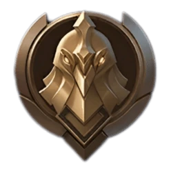

Воин (Warrior): Начальный ранг для всех новичков. Имеет 3 дивизиона (III, II, I), для продвижения нужно 3 звезды. Особенность: звёзды не теряются при поражениях, так что это идеальная песочница для обучения. Здесь вы освоите базовых героев вроде Мии.
На начальных стадиях рейтинговой игры вашими противниками в основном будут боты, так как игроки только знакомятся с системой рангов. Поэтому до грандмастера необходимо выполнять следующее: